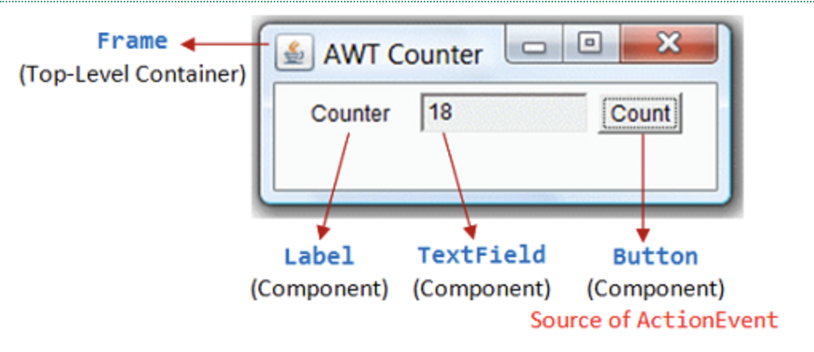

Lab Assignment 13
My Counter (Layout)
In this lab, you will practice creating a basic Swing layout with labels, text fields, and a button. You will not add any actions yet, next time, we will learn how to make the button functional.
Task Description

- A
JLabelto describe the counter - A non-editable
JTextFieldto display the current count - A
JButtonlabeled “Count” (you will add functionality later)
Step 1: Build the Counter Panel
In this step, you will create a panel that contains a label, a text field, and a button. This panel represents a single UI component and will be added to the application later.
1.1 Create the panel class
Create a new class called MyCounter that extends JPanel.
1.2 Add component fields
Add private fields for the UI components used in this panel:
-
A
JLabelfield namedlabel -
A
JTextFieldfield namedfield -
A
JButtonfield namedbutton
These components are stored as fields so they can be accessed/modified later.
1.3 Initialize components in the constructor
In the constructor of your panel class, initialize each component:
- Initialize
labelwith the text"Counter" - Initialize
fieldwith the value "0" and a width of 5:new JTextField("0", 5) - Initialize
buttonwith the label"Count"
After creating the text field, configure it so the user cannot edit it: field.setEditable(false);
1.5 Choose a layout for the panel
Before adding any components, set a layout manager for this panel.
To match the expected layout in the screenshot, use a layout that arranges
components in a single row, example setLayout(new FlowLayout());:
new FlowLayout()(recommended)- or
new GridLayout(1, 3)
1.6 Add components to the panel
Add the components to the panel in the following order:
- The label
- The text field
- The button
Step 2: Run the App (MyApp)
In this step, you will create an application class whose job is to:
- create the window
- install the main panel
- make the app visible
This class does not build the UI itself — layout and components belong inside panel classes.
2.1 Create the application class
Create a new class called MyApp.
This class represents the application, not a UI component.
2.2 Add a JFrame field
Add a private field to store a JFrame.
Design idea:
- The application has a frame
- The frame represents the OS window (title bar, close button)
2.3 Write the constructor (build the app)
Initialize the frame and configure the window.
In the constructor, you should:
- Create the
JFrameobject - Set the window title "AWT Counter"
- Position the window on the center of screen (hint: use
setLocationRelativeTo(null)) - Set the default close operation
- Install one main panel using
setContentPane(new MyCounter()) - Set a fixed window size so that your output approximately matches the screenshot. Your size does not need to be exact, but the components should appear clearly and in a similar layout.
2.4 Add a run() method
Create a run() method whose responsibility is to:
- make the application visible
Separating construction from execution makes the program easier to reason about and extend.
2.5 Write the main method
In the main method:
- Create an instance of your application class
- Call its
run()method - Execute the app and verify that the text field is not editable.
This makes the object lifecycle explicit:
- constructor → build the app
run()→ start the app
Copy the SwingUtilities.invokeLater(...).Why?> Swing is not thread-safe.
All UI creation and updates must happen on a special thread called the Event Dispatch Thread (EDT).
SwingUtilities.invokeLater(...) tells Java:
- “Wait until Swing is ready”
- “Then run this code on the correct UI thread”
For now, you do not need to fully understand threads. Just treat this as a best practice that keeps Swing applications stable.
We will explain the Event Dispatch Thread in more detail in a future lecture.
public static void main(String[] args) {
SwingUtilities.invokeLater(() -> {
MyApp app = new MyApp();
app.run();
});
}
Next lab: you will add an ActionListener to make the “Count” button increase the number.
My Accumulator (2x2 Layout)
Overview
In this part, you will build a second panel class named MyAccumulator.
This panel is a small form arranged in a 2×2 grid.
2.1 Create the panel class
Create a new class called MyAccumulator that extends JPanel.
This class represents one UI panel (just like MyCounter).
2.2 Add component fields (declare only)
Declare the following private fields in MyAccumulator.
Do not initialize them yet.
Use these names exactly:
private JLabel labelTotal;private JTextField fieldTotal;private JLabel labelAdd;private JTextField fieldAdd;
2.3 Set the layout (2×2 grid)
In the constructor, set the layout manager to a 2×2 grid.
You may use:
new GridLayout(2, 2)2.4 Initialize the fields
In the constructor, initialize:
labelTotalwith text"Enter an Integer:"labelAddwith text“Accumulated Sum:”- Set
fieldAddas an editable text field with the default value of 0 - Set
fieldTotalto be non-editable with the default value of 0
2.6 Add components in the correct order
Add the four components to the panel in the order so the grid matches the screenshot.
2.7 Show MyAccumulator by updating the content pane
Reuse your application class from Part 1.
To view MyAccumulator, reuse the same JFrame but install a different panel:
- Change
setContentPane(new MyCounter())tosetContentPane(new MyAccumulator()) - Run your program again
This is a preview of the idea of “screens”: the frame stays the same, but the panel inside it changes.
3. What’s Next
In the next lab, you will add ActionListener logic so that pressing Enter in the input field updates the accumulated sum.
üí° Hint: Adjusting Panel Size
If your frame looks too small, you can suggest a preferred size for the panel before calling pack():
setPreferredSize(new Dimension(250, 100));üí° Hint: Required Imports
Make sure to import both Swing and AWT packages at the top of your file:
import javax.swing.*;
import java.awt.*;